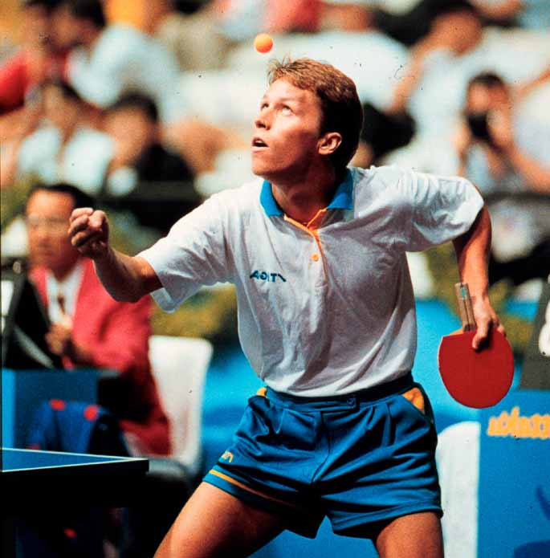

Kjell Johansson "Hammaren"
En av de mest framgångsrika svenskarna i historien. Rankades 1:a i världen 1972 och 1973.
Tog 29 medaljer i EM och VM. Han vann både lag-vm, dubbel-vm och var 2 poäng från att vinna singel-vm.

Jo Waldner "Det evigt gröna trädet"
Jan-Ove Waldner är Sveriges bästa pingisspelare genom alla tider. Redan vid 16 års ålder slog han igenom och bara några år senare lyckades han med det omöjliga, att riva den kinesiska muren i lag-VM 1989 .
Han tog Sveriges första och enda Os guld i pingis 1992 och kallas i Kina för "Det evigt gröna trädet" .
